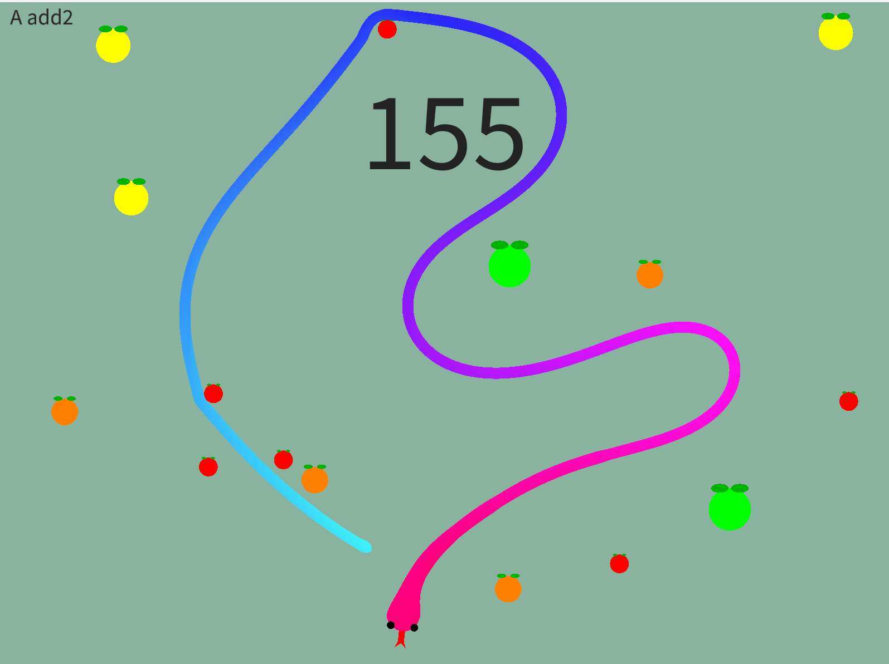
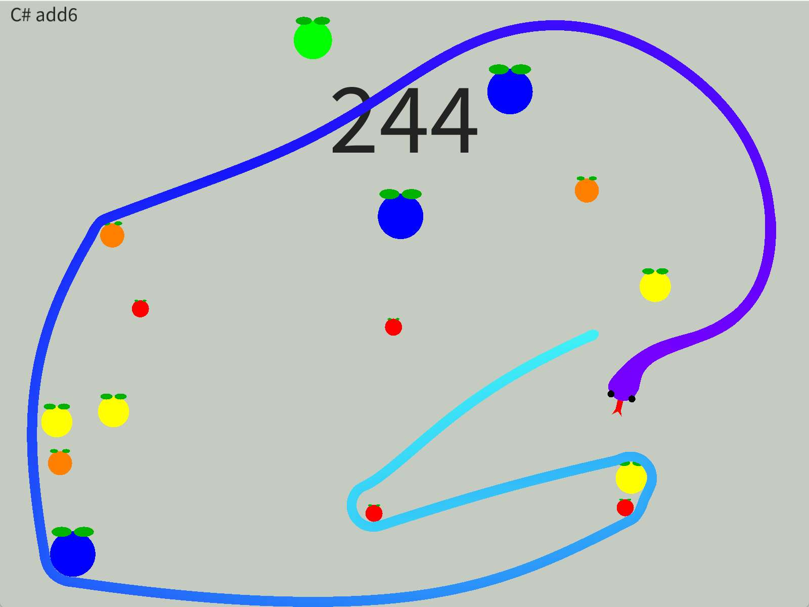

Snake
- Periodo
- Agosto 2025 – actualidad
- Herramienta
- Processing
- Formato
- Experimento individual
Qué es

El punto de partida fue un experimento de animación procedimental en 2D: un controlador de movimiento en el que cada segmento del cuerpo de la serpiente sigue a la cabeza de forma suave y continua, en lugar de desplazarse casilla a casilla sobre una cuadrícula rígida. A partir de ese controlador se construyeron las mecánicas del Snake clásico: crecimiento del cuerpo al comer, detección de colisiones contra el propio cuerpo y reinicio de la partida al chocar.
Generación de música

Sobre esa base se añadió un sistema de música procedimental, con la idea de cruzar dos áreas de interés: la música y la generación de contenido por algoritmos. El sistema genera acordes en tiempo real, seleccionando cada nuevo acorde en función de su consonancia con el anterior mediante reglas de probabilidad y el círculo de quintas. La banda sonora no está pregrabada: se genera durante la partida y cambia en cada ejecución del juego.
Notas técnicas
- Animación resuelta mediante cálculo de seguimiento entre segmentos, sin sprites ni keyframes prediseñados.
- Generación de música basada en reglas de teoría musical (círculo de quintas, consonancia entre acordes), no en aleatoriedad simple.
- Desarrollo individual, de principio a fin, en Processing.
- Pendiente: interfaz de usuario básica para el juego.